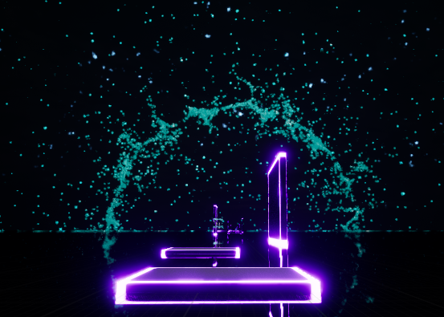
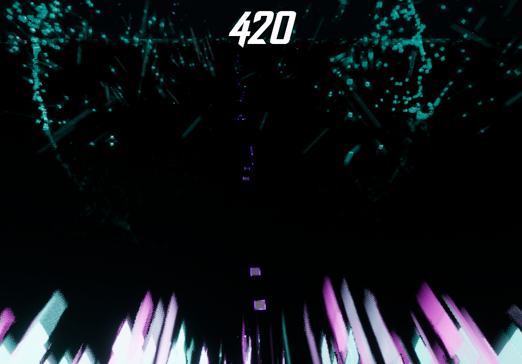
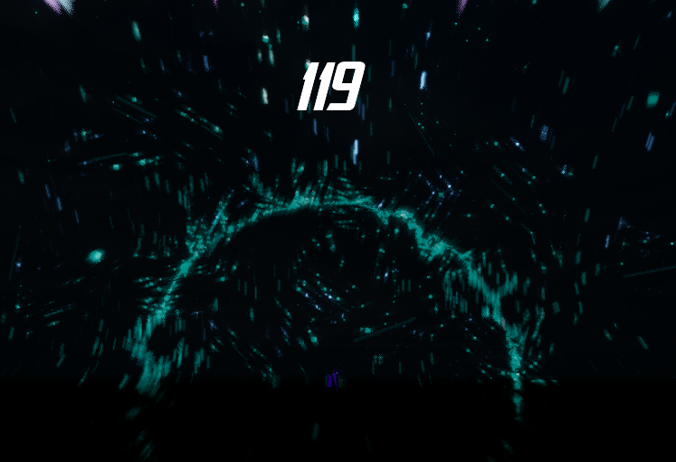
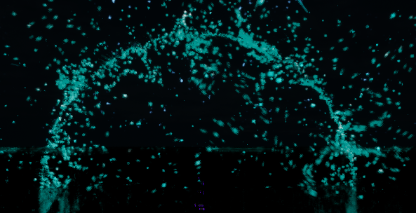
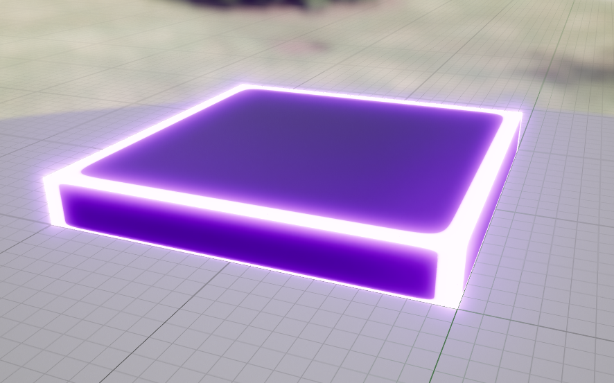
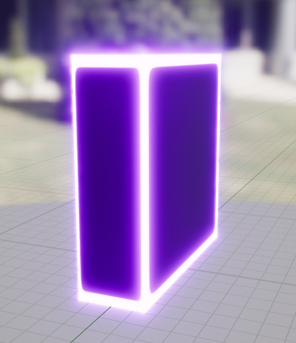
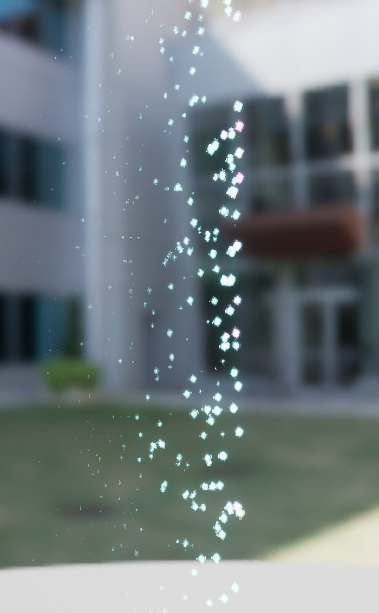
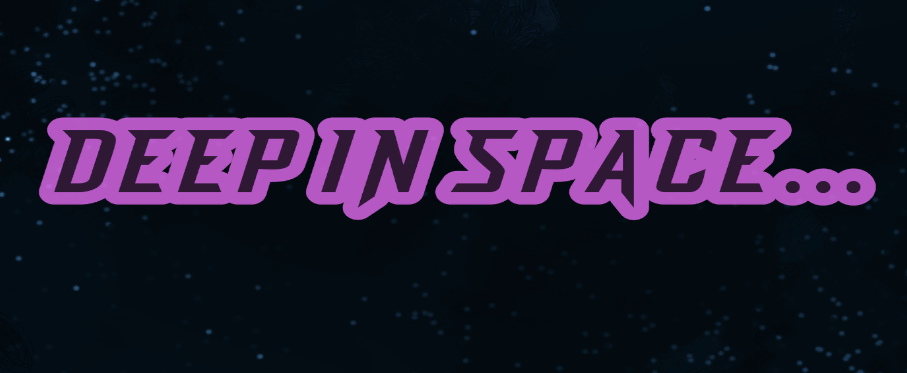
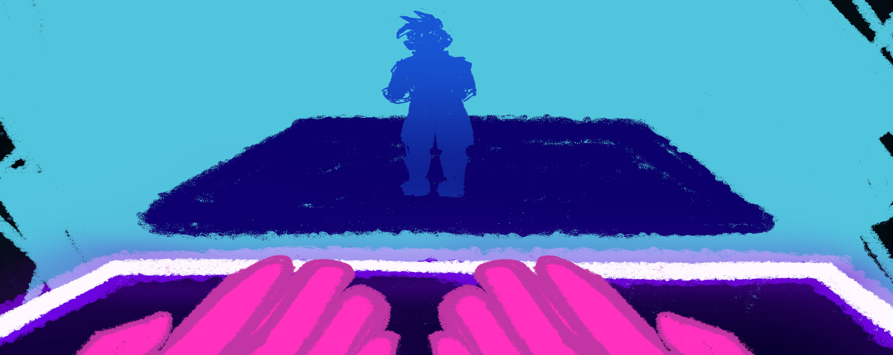
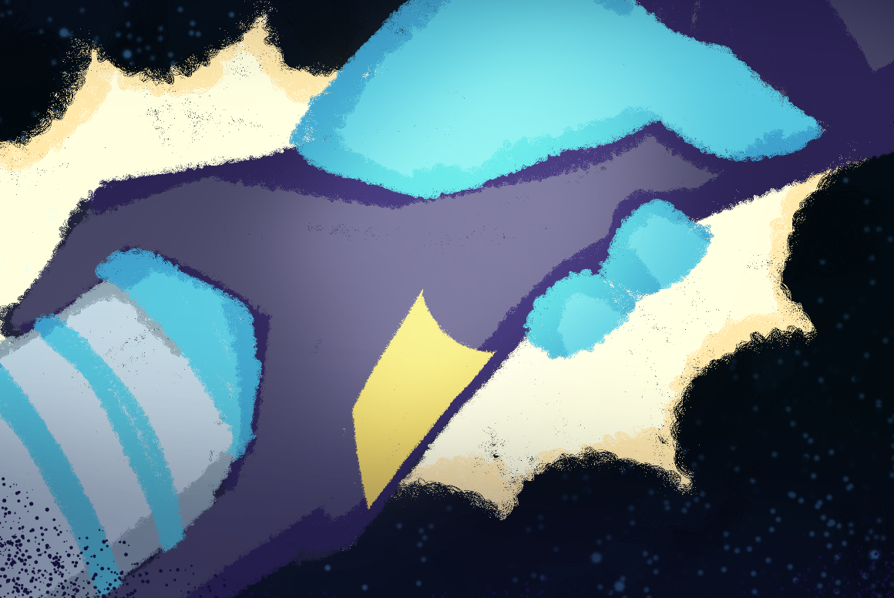

Quantum Leap is a rhythm-based Parkour Game where players can select the song they wish to play on, and most direct the character to land their jumps on a platform. The more platforms and walls you hit, the higher your score. The goal is to either beat the friend playing next to you on the couch, or set a high score for yourself.
Quantum Leap was the first game I ever developed in Unreal 5, the experience of using a powerful and complex engine opened my eyes to the possibilities of what could be done with the engine. It inspired me to develop The Ninth Circle.
Level Generation
Being a rhythm based game, the levels we needed to create needed to be extremely meticulous. We started by hand-crafting our levels and placing platforms and walls at constant distances. We soon realized that this wasn't going to work, if we wanted to add multiple playable songs to the game, we had to come up with a better way to generate these platforms as well as their lengths and distances. I discovered that a popular rhythm based game called OSU!, had a program that we could use to generate a beat map. Once we tested out a few songs in the beat map, we would import these beat maps into the game, and from the information gathered by these beat maps, we would place platforms and walls instead of buttons to click or hold sequences. Once we had perfected our system, we began by creating the controls and basic infrastructure of the core game loop.
Infrastructure
The next step for myself and the team was to calculate the necessary jump height, drops and pace of the game so that the players would have the opportunity to actually land on the platform and score more points. We effectively grouped all the platforms and walls in the level, and since they were meant to be hit in a perfect sequence, we would iterate through the list of objects step-by-step, analyzing the distance and type of object we were going to hit. Once we managed to calculate these distances, we moved on to creating the wall ride in the game. Our wall ride is more of a visual effect than it is an actual wall ride. Because the player is never meant to really turn their head down, we found that the best way to add a wall ride in the game was to lock the camera to the wall, and slide the camera across until the jump had to be triggered. With a little camera tilt and arm sticking out towards the wall, we gave the idea to the player that they were actually wall riding, and depending on the origin height of the wall ride, the camera would slide across that point.
The next step was to create the score system. Since we wanted our game to support up to 4 players connected to the same system, we created a UI panel to count the score and display it to the player. While the score counts up passively, it jumps up based on the platforms hit, how accurately the player hit the wall ride, and it increases based on a multiplier for the number of platforms hit in sequence(the multiplier has a cap). Once this was created, all we had left to do was texture the levels, make a cutscene for the narrative of the game, and create a list of songs for the player to choose from.
Level Texturing
Harnessing Unreal 5's graphical capabilities, we wanted to generate neon textures, particle effects, and glows on the platforms on a dark level for the player's immersion. We started by creating a ring in the distance that the player approaches as they get closer to the end of the level itself, and after learning the particle generator in Unreal 5(before Lumen), my colleagues and I were more equipped to create gradient colored particles.
 After the design of the end ring, we moved on to creating the platforms and making the edges glow, as well as making the plane of the level reflective to align with the narrative of the game. By increasing the Bloom attributes of the materials in the game, we were able to make a glow powerful enough to reflect on a black mirror.
The last addition we made to particles and texturing was to give the player a surround particle effect. By encompassing in leaf type particles, we randomize the color and glow of the particles surrounding the player. This was made possible by the Niagra system provided by Unreal, it was the product of all of our knowledge on particle generation, and texturing. The final step was to add our narrative elements and create a menu for the player to select their song.
The Narrative
  An artist on the team drew single frame drawings depicting what occured during the game. The narrative is as follows, your starship's engine ends up splitting reality, creating multiple copies of the player, the one who reaches the end(highest score), becomes the version of the main character that restores reality to its original dimension and closes all other alternate dimensions, thus becoming, the original. Our colleague created both a cut scene, and an end game cut scene before announcing the winner.
Feel free to check out our game, downloadable from our Itch.io page and includes gamepad support!